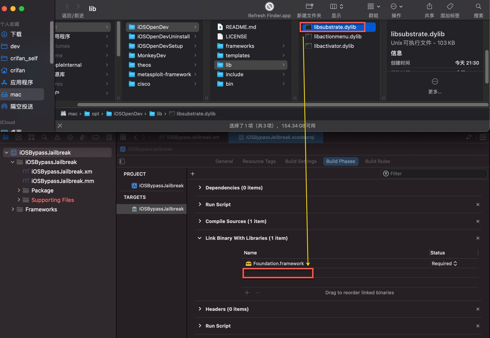
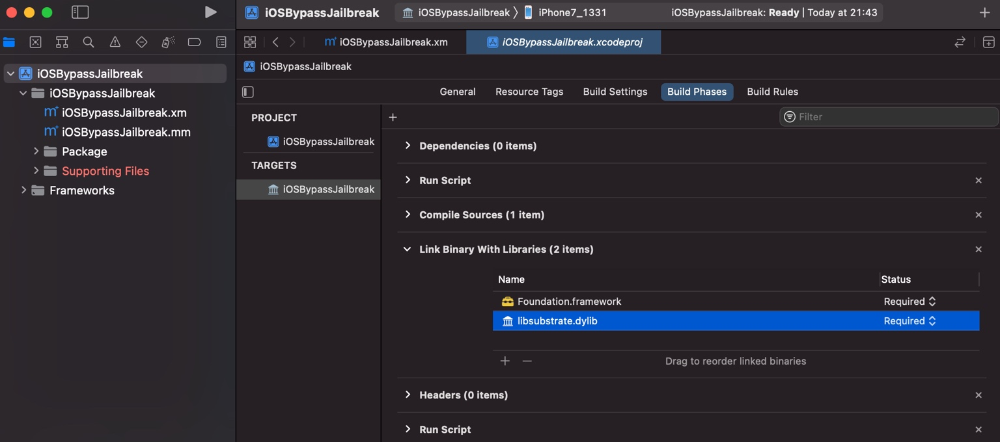
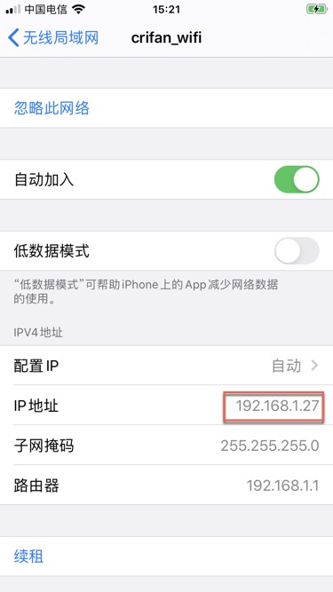
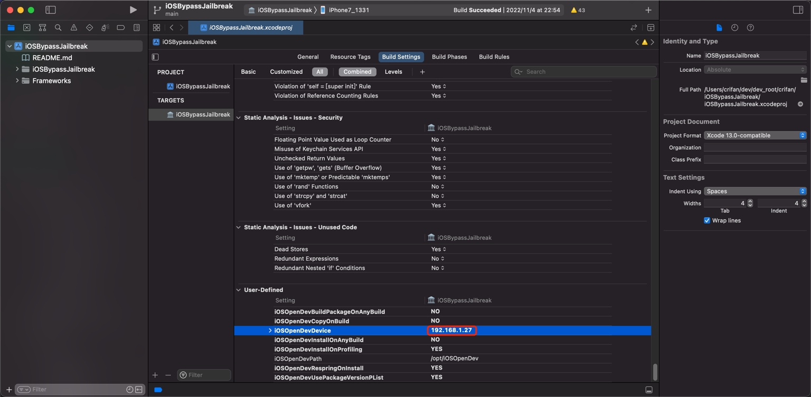

初始化配置iOSOpenDev的Xcode项目
去掉Deploymen Info中的Mac
此处，先去做第一个配置方面的改动：Deploymen Info中去掉Mac，因为我们开发的是iOS的插件，不需要发布到Mac

导入依赖库libsubstrate.dylib
把libsubstrate.dylib(一般在/opt/iOSOpenDev/lib/libsubstrate.dylib)：

导入到项目中的：Targets->YourProjectName->Build Phases->Link Binary With Libraries

设置被hook的app的包名
去把要hook的，被拦截的app的包名，加到被hook的包名的列表中：
YourProjectName->YourProjectName->Package->Libarary->MobileSubstrate->DynamicLibraries->CurrentProjectBundleIdentifier.plist
在Root->Filter->Bundles，会看到Item 0：
Type：StringValue：填入你要hook的app的包名- 举例
com.crifan.ShowSystemInfo
- 举例

- 另外
- 如果要新增一行
- 移动到
Item 0所在的行，会看到出现个➕=加号，点击加号，会新增一行
- 移动到
- 如果要新增一行
设置iPhone的IP
把此处要把iOS调试设备（iPhone）中的IP地址：

此处是：192.168.1.27
去加到配置中去：
iOSOpenDevDevice=192.168.1.27

附上原默认的更新后的配置：
iOSOpenDevBuildPackageOnAnyBuild = NO
iOSOpenDevCopyOnBuild = NO
iOSOpenDevDevice = 192.168.1.27
iOSOpenDevInstallOnAnyBuild = NO
iOSOpenDevInstallOnProfiling = YES
iOSOpenDevPath = /opt/iOSOpenDev
iOSOpenDevRespringOnInstall = YES
iOSOpenDevUsePackageVersionPList = YES
另外，理论上，去把对应变量加到环境变量：
➜ ~ cat ~/.zshrc | grep iOSOpenDevDevice
export iOSOpenDevDevice=192.168.1.27
效果应该也是一样的。
确保ssh免密登录iPhone
此处iOSOpenDev内部在调试期间，会自动通过ssh访问iPhone设备，把生成的.deb插件的文件下载和安装到iPhone中
此时就需要先准备好环境：确保Mac中可以，ssh的免密登录iPhone
此处ssh免密登录的具体步骤是：
- 先用ssh登录一次iPhone
- 命令
ssh root@192.168.1.27 - 输入密码
OpenSSH的默认密码是：alpine
- 即可登录到iPhone中
- 命令
- 把ssh的key拷贝到iPhone中
- 命令
ssh-copy-id root@192.168.1.27 - 输入密码：
alpine
- 命令
即可实现，ssh免密登录：
以后ssh直接可以访问iPhone，而无需输入密码
常见问题
如果没有ssh免密登录，则常会看到对应的错误提示：
Preparing to run Xcode Build Phase...
Signing /Users/crifan/Library/Developer/Xcode/DerivedData/iOSBypassJailbreak-bfqgivvncccwmeaykhtbtvgylkkq/Build/Products/Release-iphoneos/iOSBypassJailbreak.dylib with ldid... Done.
Copying /Users/crifan/Library/Developer/Xcode/DerivedData/iOSBypassJailbreak-bfqgivvncccwmeaykhtbtvgylkkq/Build/Products/Release-iphoneos/iOSBypassJailbreak.dylib to package directory at /Users/crifan/dev/dev_root/crifan/iOSBypassJailbreak/iOSBypassJailbreak/Package/Library/MobileSubstrate/DynamicLibraries...
Preparing to build package...
Setting control file /Users/crifan/dev/dev_root/crifan/iOSBypassJailbreak/iOSBypassJailbreak/Package/DEBIAN/control Version field to 1.0-1 using /Users/crifan/dev/dev_root/crifan/iOSBypassJailbreak/iOSBypassJailbreak/PackageVersion.plist... Done.
Building package ... Done.
Creating zip /Users/crifan/dev/dev_root/crifan/iOSBypassJailbreak/Packages/com.crifan.iOSBypassJailbreak_1.0-1_iphoneos-arm.zip... Done.
Host key verification failed.
Failed to create directory /var/root/iOSOpenDevPackages on device 192.168.1.27
Command PhaseScriptExecution failed with a nonzero exit code